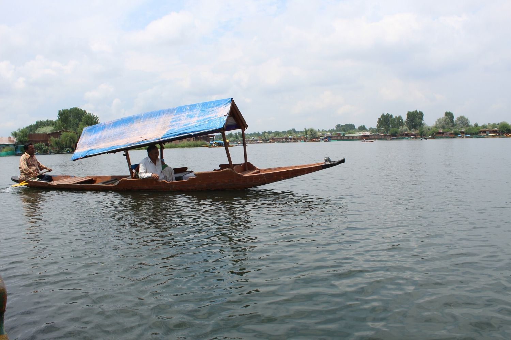
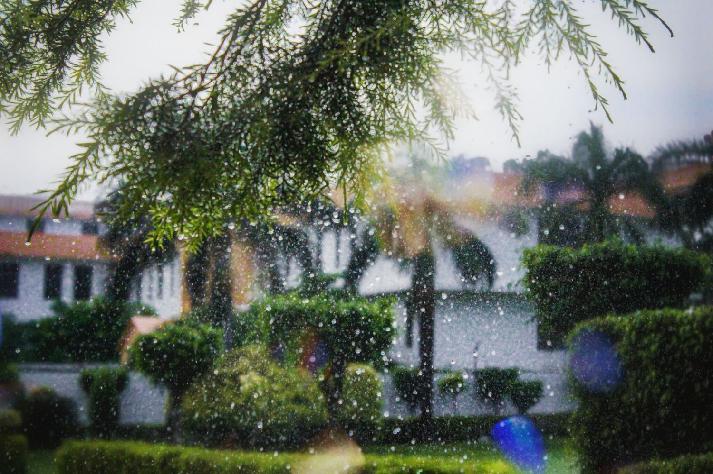

Landscape Photography
Preface:
It is amazing to see how quickly the world is changing around us. What seemed to be intact and perfect just a
few years ago is getting destroyed by us humans.
One of the reasons why I fell in love with photographing nature is because it is my way of showing people that
the beauty around us is very fragile and volatile. And if we don’t take any action now, all this beauty will
someday cease to exist, not giving a chance for our future generations to enjoy it the same way we can today.

Hundreds of movies have been filmed, thousands and thousands of great pictures taken and yet the world is not
listening. What can we do and is there hope? It is very unfortunate that we only act when a disaster of a great
scale hits us and the unbalanced force of nature enrages upon us.
But we as photographers must continue to show the world the real picture out there – the deforestation of our
rich lands, the pollution that is poisoning our fresh waters and causing widespread diseases, the melting of
glaciers, the extinction of species and many other large-scale problems that are affecting the lives of billions
around the world. Therefore, it is our responsibility as photographers to show the real picture.
What is Landscape Photography:
Landscape photography conveys the appreciation of the world through beautiful imagery of the nature that can be
comprised of mountains, deserts, rivers, oceans, waterfalls, plants, animals and other scenery or life.
While most landscape photographers strive to show the pureness of nature without any human influence, given how
much of the world has been changed by humans, depicting the nature together with man-made objects can also be
considered a form of landscape photography.
Photographing landscapes involves three key elements:photo equipment, skill/technique, and light.
Best Lenses for Landscape Photography
So, what are the best lenses for landscape photography? With so many different prime and zoom lenses available
from a variety of different manufacturers, it can get quite difficult to make the right selection, especially
for a beginner. Personally, instead of focusing on one do-it-all lens that covers everything from wide-angle to
telephoto, I would recommend to go for a set of high-quality lenses that will cover most of your needs. A good
landscape photography lens kit should be comprised of a set of lenses from ultra-wide angle to telephoto. An
ultra-wide angle lens will allow you to get close to subjects and show their grandeur; a normal range lens will
probably be the most used lens in your arsenal for photographing most subjects, whereas a telephoto lens will
allow you to focus on a particular feature of the landscape in front of you, or to perhaps photograph distant
subjects.
To cover these needs, landscape photographers come up with their set of “trinity” lenses, such as 14-24mm f/2.8,
24-70mm f/2.8 and 70-200mm f/2.8 lenses. Such lenses are typically of very high quality and are considered to be
professional-grade lenses. Those on tighter budgets or who want to stay light often end up going for slower f/4
lenses such as 16-35mm f/4, 24-120mm f/4 and 70-200mm f/4, which can also be excellent choices for landscape
photography.
Camera Support – Tripods
A landscape photographer without a tripod is a handicapped photographer. Although modern digital cameras are capable of producing amazing results at higher ISOs, some images are difficult and sometimes even impossible to capture without proper support. For example, it is impossible to photograph the night sky without a tripod. Photographing colorful clouds and the high dynamic range of scenes before and after sunsets would be extremely difficult without keeping camera mounted on a tripod. Another example is taking pictures of moving water (such as a waterfall) at slow shutter speeds. Basically, for any photography involving shutter speeds that are too slow for one to be able to hand-hold a camera without introducing camera shake, it is a good idea to use a tripod

Photo Technique:
Now that you know what camera gear you need, let’s move on to the fun part – photo technique, which is comprised of three parts: Camera Gear Technique, Composition and Post-Processing. These three elements are all equally important in landscape photography and you have to master them all in order to be able to produce great-looking images that you could potentially showcase and even sell.
Camera Settings
Camera Mode:Manual. Learn how to shoot landscapes in manual mode. Use the built-in camera meter to see if
you need to increase or decrease the shutter speed.
Aperture:Start at f/5.6 and stop down based on how much of the foreground and background you need to keep
sharp. Try not to shoot beyond f/8 (on APS-C sensor cameras) and f/11 (on full-frame) to avoid diffraction.
Shutter Speed:Doesn’t matter, since you will be using a tripod and adjusting the shutter speed based on
what your camera meters. In some cases, when you need to freeze or blur movement, you will have to adjust the
shutter speed accordingly by changing aperture and / or ISO, or by using a filter.
ISO: Whatever your camera’s base ISO is (typically ISO 64 or ISO 100). If you have a setting for “Auto
ISO” on your camera, turn it off.
White Balance:Auto, since it doesn’t matter if you shoot RAW – you can easily change White Balance in
post-production.
High ISO Noise Reduction:Off, you should not be shooting at high ISOs anyway.
Composition and Framing:
Composition is a key element of every type of photography, including landscape photography. Without good
composition, pictures can look plain, lifeless and boring. How should you compose your images and are there any
rules for composition? What is good and bad composition? How should you frame your shots? I get these kinds of
questions from our readers all the time, so I decided to write about it in more detail in this article.
When it comes to composition and framing there are no real set “rules” per se. However, there are some tips and
suggestions that might help with composing and framing your images better. Here are some of my guidelines in
short:
- Communicate through your photographs
- Identify your subject(s)
- Slow down and be patient
- Align / level your photograph before taking a picture
- Avoid always placing your primary subject in the center
- Shapes and curves
- Balance your shot through symmetry
- Fit main subjects in the frame
- Don’t get stuck with horizontals
- Keep it simple
- Look for patterns and lines

